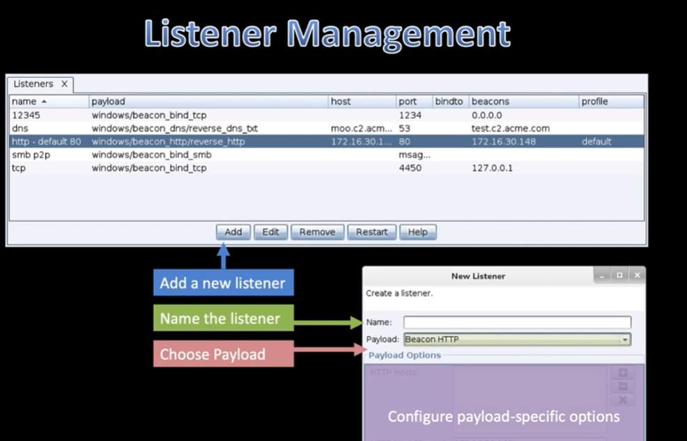

Overview- > Listener Managment
- > Beacon Payloads
- HTTP and HTTPS Beacon
- DNS Beacon
- SMB and TCP Beacon
- External C2
--------------------------------------------------------------------------------------------------------------------------------------------------------------------------------------------------------
Types of Listeners
- egree ~ is a payload that beacons out of a network
- peer-to-peer ~ is a payload that communicates through a parent payload
- alias ~ is a refrence to a payload handler elsewere (another toolkit)

--------------------------------------------------------------------------------------------------------------------------------------------------------------------------------------------------------
Stagers
~ a tiny program that downloads a payload and passes execution to it
- - less secure
- - more brittle
- - easier to detect
- - not default in cobalt 4
{Staging Server}- we send macro enabled docand spawns a child process, weinject a stagerinto that child process, the stager executes
The whole point is to make a get request- Take aways
- staging is what allows us to a metasploit framework exploit to deliver a cobalt strike beacon payload (also allows us to pass sessions to metasploit framework)
- this creates an Opsec concern

--------------------------------------------------------------------------------------------------------------------------------------------------------------------------------------------------------
HTTP Beacon - under the hood- - GETrequest is the "beacon"
- - the ENCRYPTED POSTrequest only happens when there is output from victim host

- you can do some cool alternatives
- - haveoutput chumpedsent over many GETrequests instead
- - swap the GET beacon for a post beacon


- you can use comma seperated list
- foo.bar.com is allowed
- 192.168.1.2 is allowed
- [::1] ipv6 is allowed with brackets
--------------------------------------------------------------------------------------------------------------------------------------------------------------------------------------------------------

Link In Slide
--------------------------------------------------------------------------------------------------------------------------------------------------------------------------------------------------------